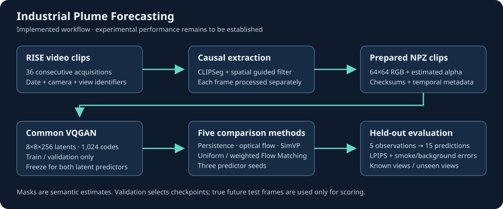
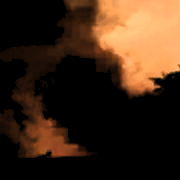

Prévision vidéo de fumée industrielle
Industrial Plume Forecasting
Prévision vidéo de fumée : CLIPSeg, VQGAN et Flow Matching, avec protocole reproductible, références comparables et suivi des erreurs.
01 / Industrial Plume Forecasting
Tâche de prévision
Comment comparer une prévision de panache aux références, tout en maîtrisant les fuites temporelles, les erreurs de segmentation et la reproductibilité des entraînements ?
Les clips conservent 36 images. La tâche de référence observe cinq images et en prédit quinze à 64 × 64. CLIPSeg et un raffinement spatial produisent des masques estimés ; un VQGAN commun est figé avant les prédicteurs latents. Une commande enchaîne les étapes et W&B suit la qualité, les régions fumée/fond et les checkpoints.

02 / Industrial Plume Forecasting
Données et extraction
RISE : clips de 36 acquisitions, RGB 64 × 64 et masques souples. Les partitions sont séparées par dates et vues ; les identifiants et empreintes sont conservés.
CLIPSeg traite chaque image indépendamment, suivi d’un filtre guidé spatial. Les masques sont des estimations sémantiques, sans opacité physique ni vérité terrain dense revendiquée.

03 / Industrial Plume Forecasting
Modèles de référence
VQGAN commun : latents 8 × 8 × 256 et 1 024 codes. Flow Matching uniforme et pondéré par alpha sont comparés à la persistance, au flot optique de Farnebäck et à un SimVP compact.
Évaluation de cinq observations vers quinze futurs ; trois graines de prédicteurs, quatre réalisations par prévision stochastique et moyenne de toutes les réalisations. La LPIPS de validation sélectionne le checkpoint.
04 / Industrial Plume Forecasting
Représentation VQGAN
Le VQGAN apprend une représentation latente 8 × 8 × 256 à partir du RGB 64 × 64. Le codebook contient 1 024 entrées. Les poids sélectionnés sur validation sont figés pour les deux prédicteurs latents. La réduction spatiale ne représente pas une diminution du nombre brut de coefficients.
05 / Industrial Plume Forecasting
Suivi et reproductibilité
Panels train / validation fixes, erreurs fumée et fond, résultats par date et vue, utilisation du codebook, gradients, temps et mémoire. Les courbes précisent leur sens et leurs limites.
Écriture atomique des checkpoints, conservation des deux derniers états et du meilleur modèle, sauvegarde des RNG et contrôle de provenance. Les NPZ finalisés restent réutilisables sans les MP4 sources.
06 / Industrial Plume Forecasting
Évaluation et limites
Le code, le protocole, les tests et la matrice sont publiés. Aucun gain prédictif consolidé ni meilleur LR calibré n’est revendiqué ; les essais comparables doivent produire ces preuves.
Les tests réservés distinguent dates futures et vues inédites, avec différences appariées et bootstrap par journée. Une reconstruction VQGAN réussie ou un faible LPIPS ne suffisent pas à démontrer une prévision fidèle.
Ressources
Projet de Master en équipe : Amine Oubaidi, Jérémy Botella et Iskander Hadi. La portée est une prévision visuelle 2D ; les mesures physiques demanderaient une validation indépendante.